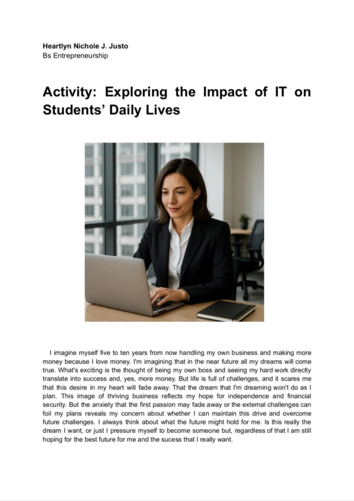
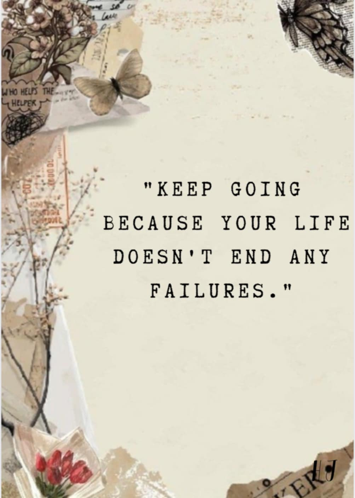

Project 1: Five to Ten years from now
Log into MidJourney and type in your prompt or an Ai website Generate 1–2 images, save or screenshot your favorite. Then we answer some question that realated to what we want to be in the future like How you imagine yourself to be in the future. What’s exciting or maybe a bit scary about it. How the image shows what you hope or worry about your future.
Project 2: Yearbook
We create a yearbook project for our one subject which the socie 02 that documents envolving the understanding who we are. Each student create per page for thier self, that includes the personal quota or mantra, which i do." Keep going because your life doesn't end any failures." This quota means that don't let setbacks stop you. Your life continues even after you experience failures, so keep moving forward.
